1游戏目标
在寒冬到来之前尽可能多地赚取 威望，证明你配得上猫之谷统治者的称号。
你的目标是先达到 20 点威望，或在第 6 轮结束时拥有全场最高威望。
- 当任何一只猫达到 20 点威望时，触发 终局。本轮剩余回合照常进行。
- 如果第 6 轮结束时没有猫达到 20 点威望，则由威望最高的猫获胜。
- 例外：若触发终局的猫在终局进行中威望跌回 20 以下，且其他玩家也未达到 20 点威望，则终局取消，游戏继续进入下一轮。
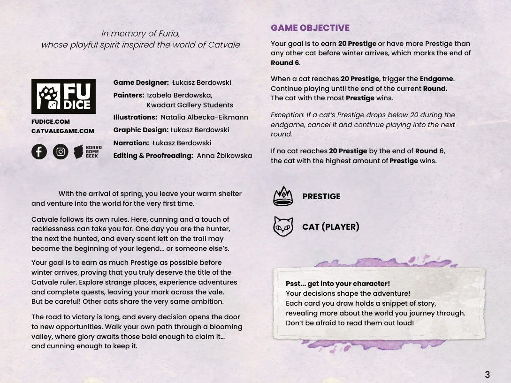
2引言
谨以此作纪念 Furia——她的顽皮灵魂启发了整个 Catvale 世界。
随着春天的到来，你离开温暖的巢穴，第一次踏入外面的世界。你的目标是在寒冬到来之前赚取尽可能多的威望，证明你才是 Catvale 当之无愧的统治者。探索陌生之地，经历冒险，完成任务，在谷地的每一处都留下你的印记。但要小心！其他的猫也怀揣着同样的野心。
Catvale 有它自己的规则。在这里，机敏加上一丝鲁莽能让你走得更远。今天你是猎手，明天就成了猎物；留在路上的每一缕气味，都可能成为你传奇的起点……也可能是别人的。
通往胜利的路很长，每一个决定都打开一扇新机会之门。穿过繁花似锦的谷地走你自己的路吧——荣耀在前方等待，奖赏属于那些敢于伸手去拿……也足够狡黠去守住的人。
3组件清单
基础版包含：
地块与标记
共有 4 种主要的 基础资源 地块（每种资源对应一种），5 种 后院 地块，以及若干 特殊 地块。48 个猫咪米宝（6 色，每色大、小各 6 个）、12 枚红色 + 6 枚黑色傲气指示物、6 枚紫色 + 6 枚蓝色成长标记、2 枚通用标记用于记录游戏状态。
卡牌与骰子
游戏共含 246 张牌，分布于 10 个牌库，另有 42 颗骰子（36 颗行动骰 D3、1 颗采集骰 K12、1 颗奖励骰 K12、2 颗命运骰 D3）。卡牌结构详见 组件详解。
扩展与众筹独占
猫砂盆秘密 增加一块图板、1 张猫咪卡（含小、大米宝各 1，红色傲气 2 + 黑色傲气 1，紫色成长 1 + 蓝色成长 1，玩家标记 12）、2 块普通地块、1 块特殊地块，以及 1 个装有 108 枚收成指示物的袋子。
竞技场 增加一块图板、1 张猫咪卡（组件同上）、2 块普通地块、4 张冒险牌、1 张杂物牌、12 张竞技场牌、1 张市场牌。使用竞技场时，用竞技场地块替换 1 块森林地块；使用猫砂盆秘密时，则用大砂坑地块替换 1 块森林地块。
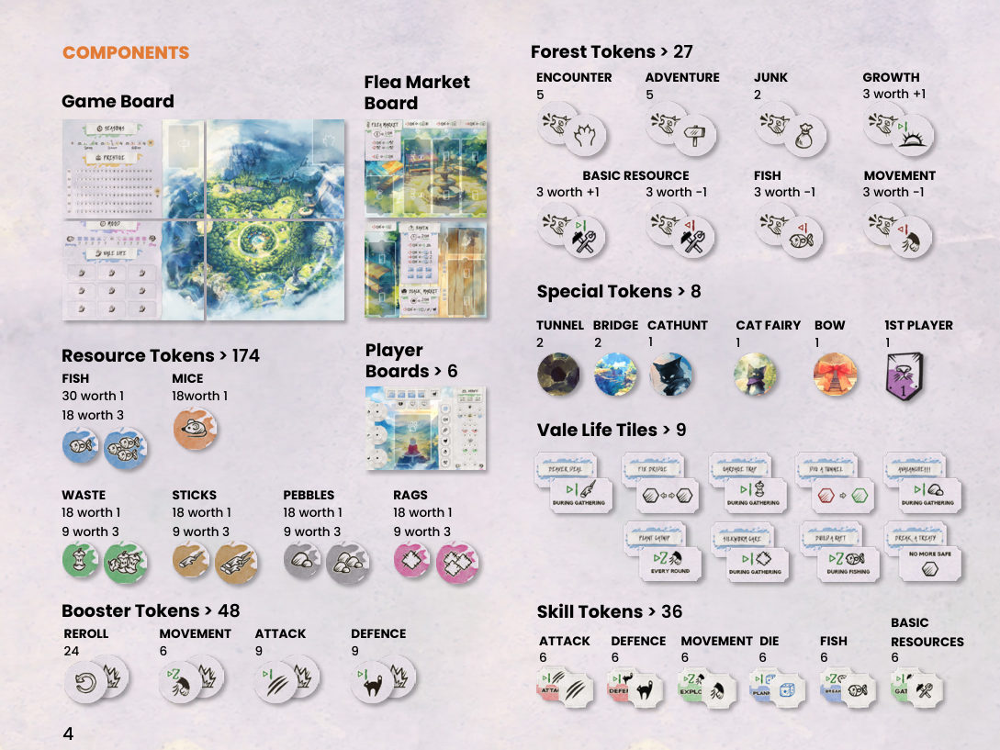
4游戏准备
在游戏开始前，按以下步骤准备。
- 洗混 冒险 和 遭遇 牌库，放在主图板上。
- 洗混两个 跳蚤市场 牌库和 杂物 牌库，放在跳蚤市场板上。
- 洗混 野心 和 起始 牌库，放在主图板旁边，待会儿要用。
- 洗混 任务 牌库，放在跳蚤市场板上。
- 把所有的 资源、鱼、强化 和 森林* 指示物放在图板旁边（*仅在使用冒险变体时）。
- 把所有的 任务 板块放在主图板的 谷地生活 区，任务标题朝上。
- 把 先手玩家、蝴蝶结、捕猫、猫仙子、隧道 和 桥 指示物放在主图板旁边。
- 把 命运、采集 和 奖励 骰子放在主图板旁边。
- 在季节轨道的起点和心情轨道的中央各放一枚 通用标记。
- 每位玩家在主图板 威望 轨道的空格上各放一枚 玩家标记。
- 根据所选 世界类型 和玩家人数放置起始 地块板块（见 下一页）。
- 把 火焰、熔岩 和 青山 地块放在主图板旁边。
- 根据玩家人数准备剩余地块，码成一摞或多摞放在主图板旁边。
每位玩家（玩家面板 + 扩展）
- 把你的 猫咪卡 放在面板上，年幼面朝上。
- 把所有的 收成指示物 放进图板旁边的袋子里（猫砂盆秘密扩展）。
- 准备好 5 颗行动骰 待用。
- 在每块扩展图板上各放一枚你的 玩家标记。
- 把两个扩展的卡牌洗入对应的牌库。
- 把 傲气指示物 放在指定位置。
- 把 竞技场牌库 放在竞技场板上。
- 把两个扩展的地块加入准备好的地块堆。
- 把 技能指示物 放在指定位置，符号面朝上。
- 把 混乱 和 和谐 标记放在成长树上。
- 拿 1 枚 重投 和 1 枚 基础资源 指示物（按你的猫咪卡）。
- 把你的标记放在面板上或旁边。
- 把你的小、大 猫咪米宝 放在面板旁边。
- 设置你的 移动、攻击 和 防御 刻度（按你的猫咪卡）。
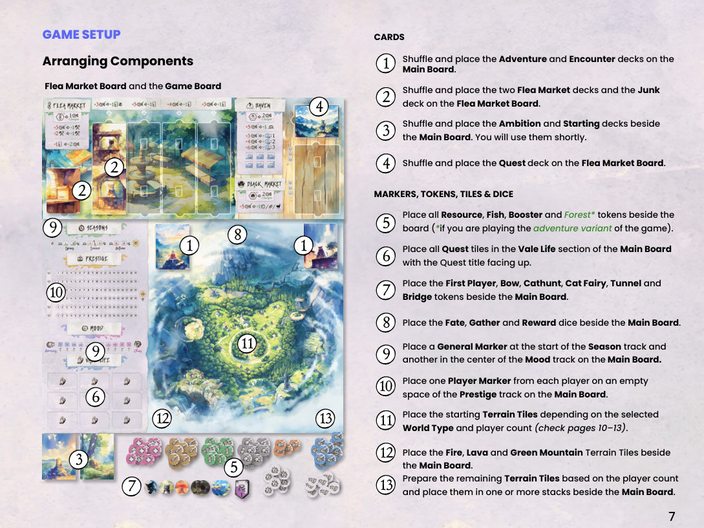
5地块选择与放置
游戏开始前，选择以下两种 地块布置变体 之一。它会改变游戏的节奏与可预测性。
- 随机世界 — 默认。按起始布局（原文规则书第 10–13 页）放置地块，剩余地块面朝下随机分布在地图上。
- 混乱世界 — 进阶。非对称布局，最不可预测。所有玩家从跳蚤市场起步，后院需要在探索中发现。
起始布局基础
- 放置 4 块渔场地块、4 块传送门地块 和 1 块跳蚤市场地块。
- 加入 森林、山 和 后院 地块 — 数量视玩家人数而定。
- 把剩余地块码成面朝下的牌堆，用于暗抽。
- 含竞技场扩展时：用竞技场地块替换 1 块森林地块。
- 含猫砂盆秘密扩展时：用大砂坑地块替换 1 块森林地块。
- 把 熔岩、火焰 和 青山 地块先放一旁备用。
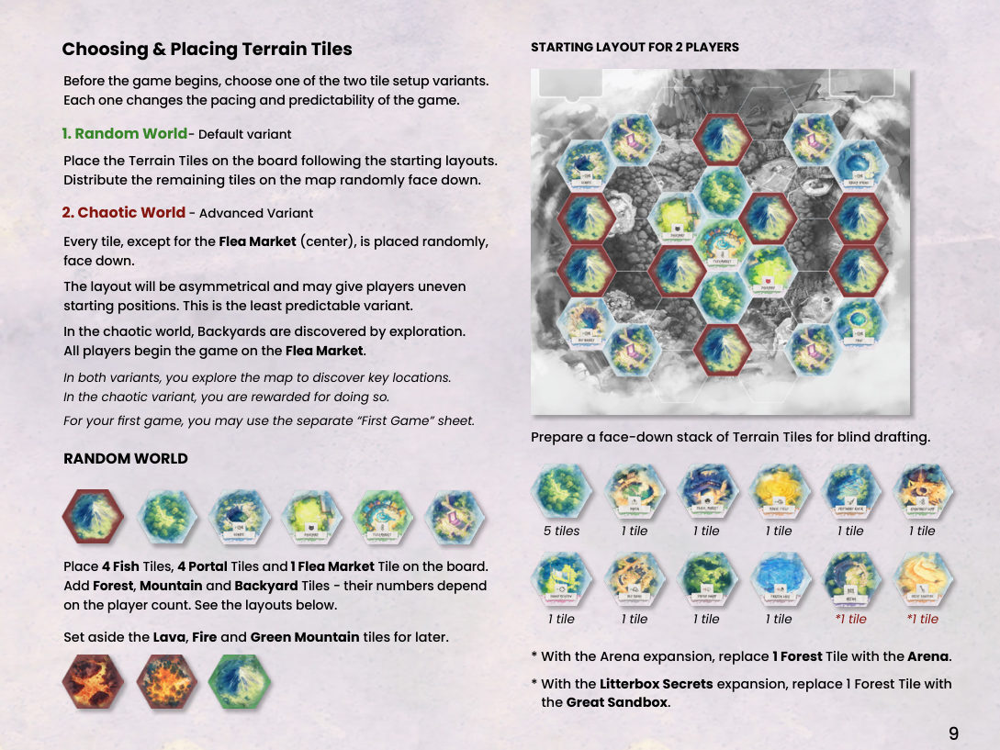
6开局
选择你的猫
选择你要扮演的猫。猫与猫之间的差异非常细微，不应影响玩法风格，所有玩家从平等的位置开始。
每只猫有两个阶段：
- 年幼的猫 — 开局获得 1 枚重投指示物和猫咪卡上指定的一种独特基础资源。移动力：3。
- 年长的猫 — 在成长树上推进到足够远时解锁。属性更强，采集特定基础资源时获得加成。移动力：4。
选择先手玩家
最近喂过猫的玩家获得先手玩家指示物。每轮开始时，按顺时针方向传递。
把你的猫咪卡放在面板上，年幼面朝上。拿取指定的基础资源和 1 枚重投指示物放在面板上。
起始手牌（轮抽）
- 从起始牌库抽 4 张牌。挑 1 张留下，其余 3 张传给左手边的玩家。
- 从收到的 3 张牌中挑 1 张留下，其余 2 张继续向左传。
- 从收到的 2 张牌中挑 1 张留下，最后 1 张弃掉。弃掉的牌不再回到游戏中。
游戏开始时你手中有 3 张牌。
野心牌
- 3–4 人：抽 2 张野心牌，留 1 张，弃 1 张。
- 5–6 人：抽 1 张野心牌，留着即可。
游戏变体
游戏开始前选择一种变体，所选变体在整个游戏中保持不变。
所选变体在计划和冒险阶段生效，详见各阶段说明。
森林指示物（仅冒险变体）
游戏开始时，把森林指示物洗混后放在图板旁边。新发现的森林地块上没有指示物——只有离开之后，才放 1 枚森林指示物。
当你带着指示物进入森林地块时，立即翻开并结算其效果。你每轮只能翻开 1 枚森林指示物。效果可能有利，也可能不利。
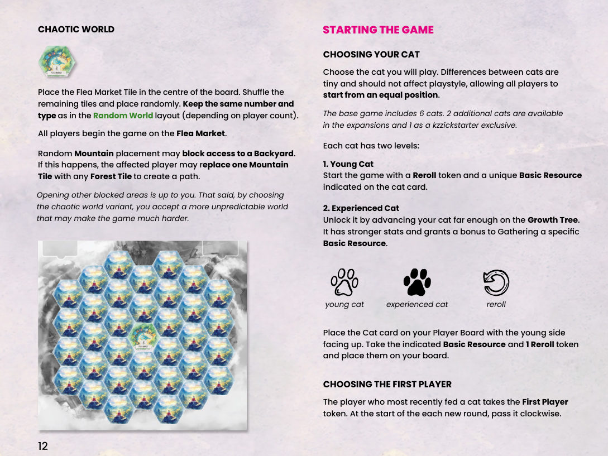
7流程总览
游戏共持续 3 个季节：春、夏、秋。每个季节持续 2 轮，全局最多 6 轮。每轮由所有玩家轮流执行回合组成。
游戏在秋季最后一轮之后结束，或在任何玩家达到 20 点威望时提前结束。
轮的阶段
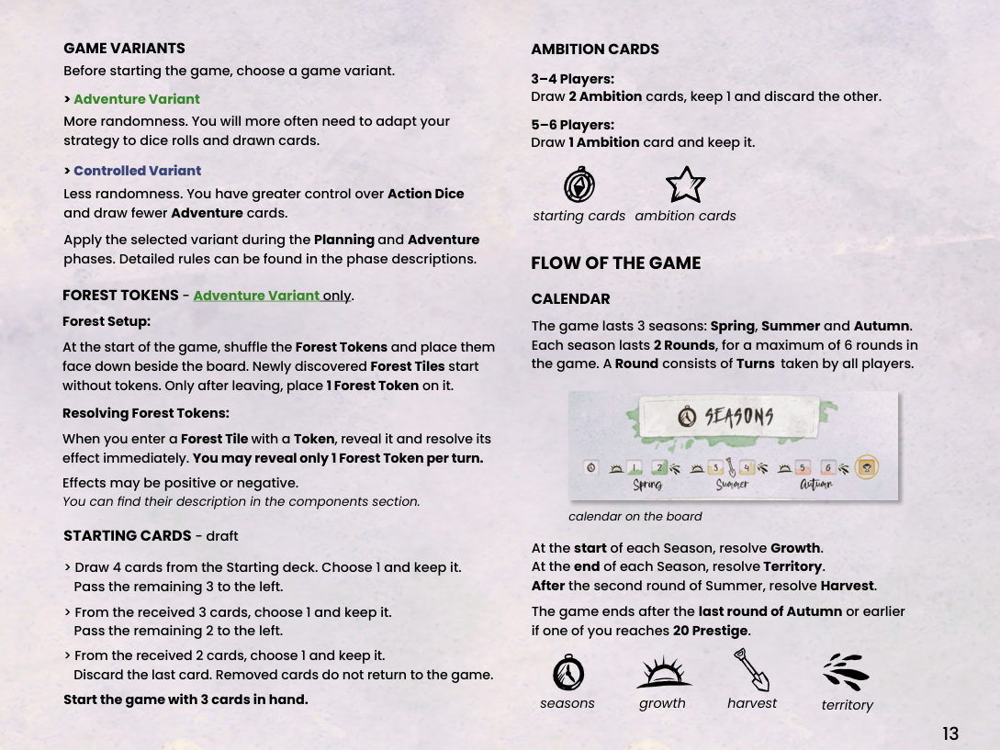
8成长阶段
仅在每个季节开始时执行（全局共 3 次）。
在每个季节开始时，消耗一定数量的 成长点，数量依玩家面板所示：
- 春季：4 点
- 夏季：6 点
- 秋季：8 点
- 根据当前季节分配并消耗成长点。
- 恢复所有失去的傲气。
- 查看 谷地心情，依此获得或失去成长点。
成长树
通过移动你在成长树上的 和谐 或 混乱 标记来消耗成长点。你可以把点数分给两个标记，或全部投入其中一个。标记可以相互越过，但不可停留在同一格。你自行选择走哪条路径。在路径允许的情况下，和谐与混乱标记可以在上升过程中换边。
成长树上包含两种槽位：
- 被动技能
- 一次性奖励
树的最后一格让你的猫 长大。
谷地心情提供的成长点
心情轨道在游戏图板上可见。除春季外，每个季节开始时查看心情标记的位置，根据位置获得或失去对应于和谐或混乱的成长点。
若标记位于混乱一侧，按轨道上所示的数值移动成长树上对应侧的标记。和谐一侧同理处理。
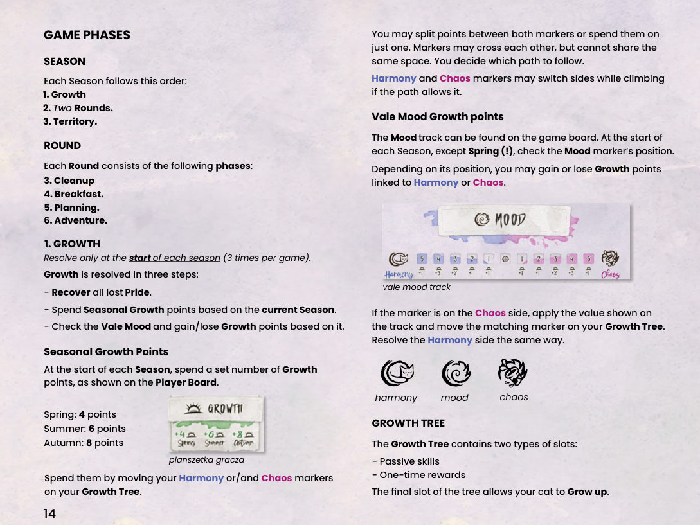
9领地阶段
仅在每个季节结束时执行（全局共 3 次）。
数一数你在游戏图板上 标记 的地块。每 3 块标记地块 获得 1 点威望。
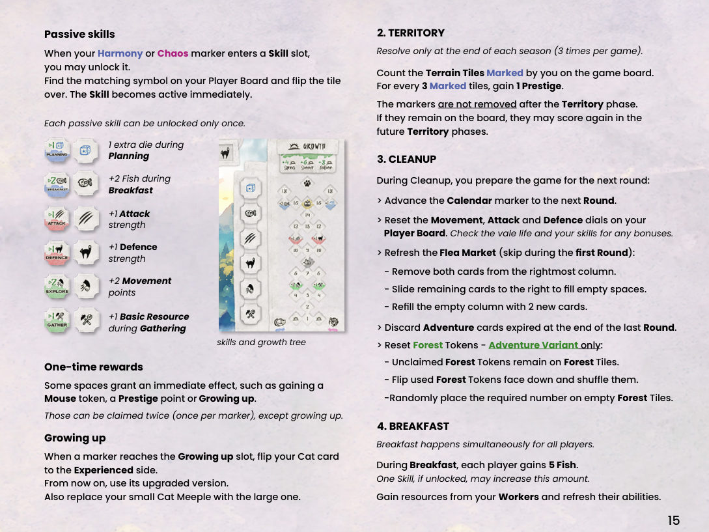
10整理阶段
整理阶段为下一轮做好准备：
- 把日历标记推进到下一轮。
- 刷新 跳蚤市场（第一轮跳过）：
- 移除最右列的两张牌。
- 剩余的牌向右滑填补空位。
- 用 2 张新牌补满空出的那一列。
- 弃掉上一轮结束时已过期的冒险牌。
- 重置 森林指示物 — 仅冒险变体：
- 把用过的森林指示物翻回面朝下并洗混。
- 随机在空置的森林地块上放置所需数量。
- 未被拾起的森林指示物留在原地。
- 重置面板上的 移动、攻击 和 防御 刻度盘。查看谷地生活和解锁的技能是否有加成。
若解锁了相关技能，可能增加以上数值。
11早餐阶段
早餐阶段对所有玩家同时进行。
早餐阶段期间，每位玩家获得 5 条鱼。收取你的雇工提供的资源并刷新它们的能力。
若解锁了相关技能，可能增加以上数值。
12计划阶段
计划阶段对所有玩家同时进行。
本阶段为下一轮准备你的 行动骰。所选的游戏变体在整个游戏中保持不变。
冒险变体
投掷 5 颗行动骰：
- 若投出 4 颗值为 1 的骰子，获得 1 只老鼠作为补偿。
- 若投出 4 颗值为 3 的骰子，所有其他玩家各获得 1 个自选的基础资源。
- 弃 1 颗骰子，放入跳蚤市场中的 骰子商店。
- 取 1 颗骰子作为你的 防御修正，其余 3 颗作为行动骰。把它们放在面板上对应的槽位。
操控变体
从 5 颗骰子中取出值为 1、2、3 的骰子，剩下的再投。
- 弃 1 颗骰子放入骰子商店，剩下的那颗加入刚才挑出的骰子。
- 按与冒险变体相同的方式，把这些骰子分配到行动骰与防御骰。
操控变体减少了运气成分，因为只有 1 颗骰子保留随机性。
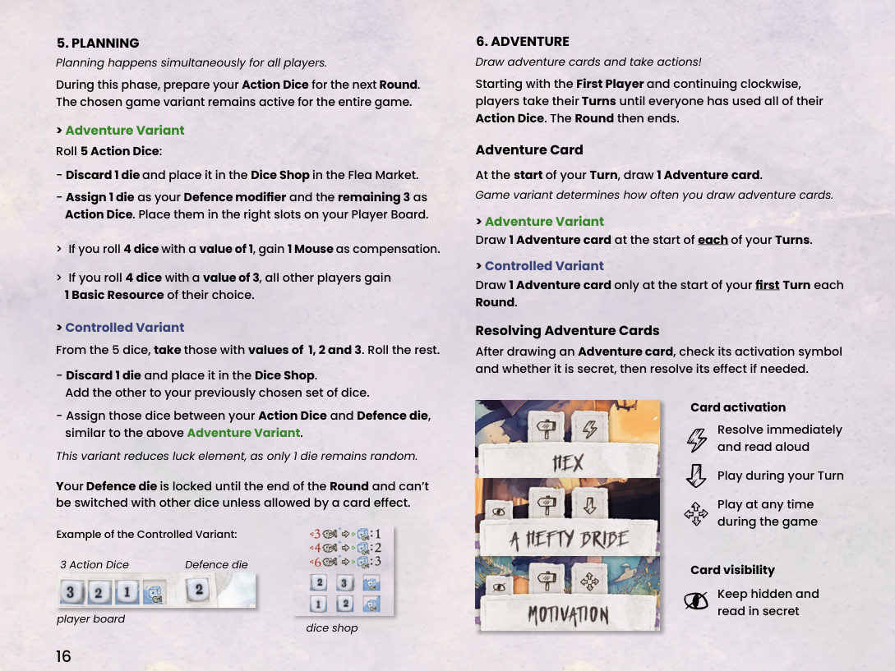
13冒险阶段
抽取冒险牌，执行你的行动！
冒险变体 vs 操控变体
- 冒险变体：在你每个回合开始时抽 1 张冒险牌。
- 操控变体：仅在你每轮的第一个回合开始时抽 1 张冒险牌。
游戏变体决定了你抽冒险牌的频率。
卡牌激活与公开性
抽到冒险牌后，查看其激活符号与是否保密，若有需要则立即结算其效果。卡牌要么 立即结算并大声朗读，要么 保密私下阅读，要么 在你的回合中打出，要么 在游戏任意时刻打出。
14行动总览
在你的回合内，你可以执行三种类型的行动：
- 基础行动 — 每回合可执行任意次数。
- 附带行动 — 每回合最多可执行 2 次。
- 主要行动 — 每回合必须执行 1 次。
每只猫的移动力如卡牌所示：年幼的猫 3，年长的猫 4。
在你的回合内，你可以打出任意数量的卡牌和指示物。雇佣雇工和升级建筑也算作使用卡牌。
- 行动可以按任意顺序执行。
- 基础行动和附带行动可以从图板上任意地块执行。
- 执行完主要行动后，把用过的行动骰放到一旁。
- 若你无法执行主要行动，则弃 1 颗行动骰。
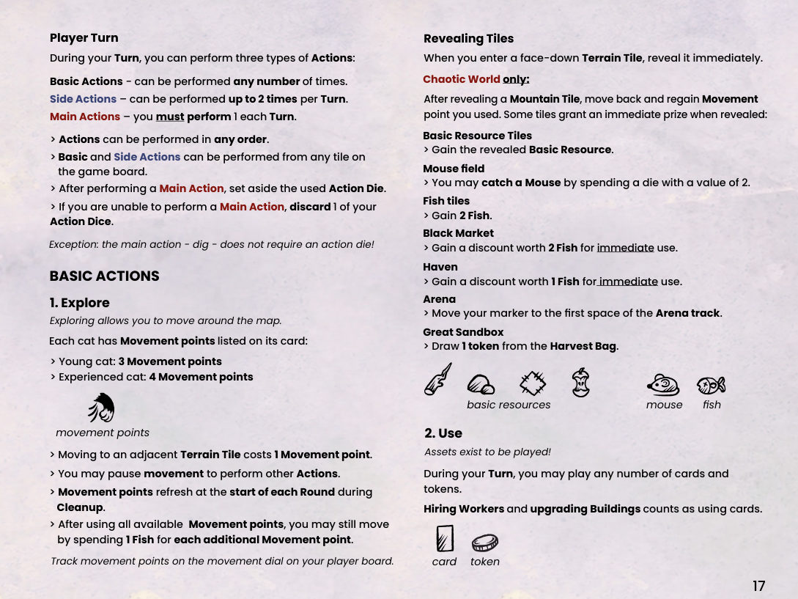
15探索
探索让你在地图上移动。
用面板上的移动刻度盘追踪移动点。
- 移动到相邻的地块消耗 1 点移动力。
- 你可以随时暂停移动以执行其他行动。
- 移动点会在每轮开始的整理阶段刷新。
- 用尽所有移动点后，你仍可每消耗 1 条鱼继续移动 1 格。
翻开地块
当你进入一块面朝下的地块时，立即翻开它。翻开山地块后，后退一格并恢复刚才消耗的移动点。一些地块翻开时立即获得奖励：
- 基础资源地块 — 获得该基础资源。
- 渔场地块 — 获得 2 条鱼。
- 鼠田 — 你可以消耗 1 颗值为 2 的骰子来捉 1 只老鼠。
- 黑市 — 获得价值 2 条鱼的折扣，立即可用。
- 竞技场 — 把你的标记移到竞技场轨道的首格。
- 港湾 — 获得价值 1 条鱼的折扣，立即可用。
- 大砂坑（猫砂盆秘密）— 从收成袋里抽 1 枚指示物。
16使用
手中的资产就是要打出来的！
在你的回合内，你可以打出任意数量的卡牌和指示物。雇佣雇工和升级建筑也算作使用卡牌。
使用是基础行动 — 你可以从图板上任意地块执行任意次数。
17交易
一切皆有价，尤其是当鱼被牵涉进来的时候。
你可以从图板上的任意位置执行交易行动。你可以在双方约定的条件下，用任意资源进行交易。交易双方的猫必须位于相同或相邻地块。
通过交易行动，你可以：
- 购买：卡牌、基础资源、成长点、行动骰、重投指示物、攻击与防御指示物。
- 出售：卡牌。
- 交换：基础资源。
每次购买、出售或交换算作 1 次附带行动。每轮你最多购买 1 颗行动骰。
站在特定地块上可获得交易折扣：
- 港湾：卡牌和基础资源少花 1 条鱼。
- 黑市：成长点和行动骰少花 2 条鱼。
- 黑市：重投、攻击和防御指示物少花 2 条鱼。
详见 跳蚤市场 一节。
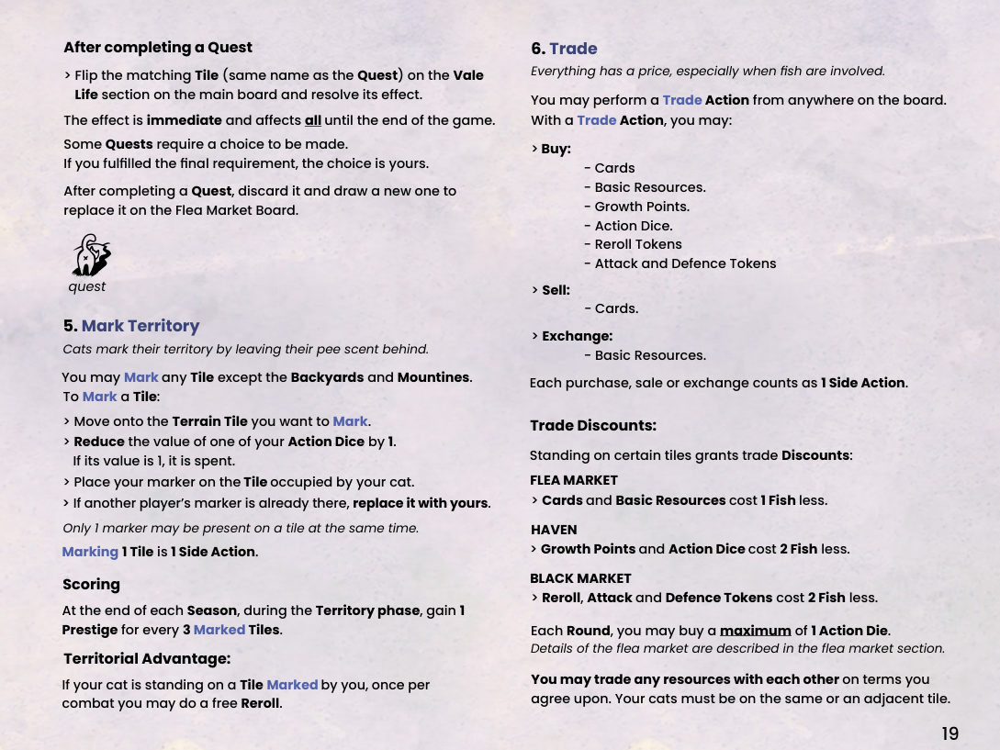
18恢复
带着受挫的傲气四处走动是有风险的。
1 条鱼恢复 1 点傲气。1 次恢复行动可以恢复任意数量的已失去傲气。你可以从游戏中的任意地块吃鱼来恢复傲气。把恢复后的傲气指示物重新放回面板上。
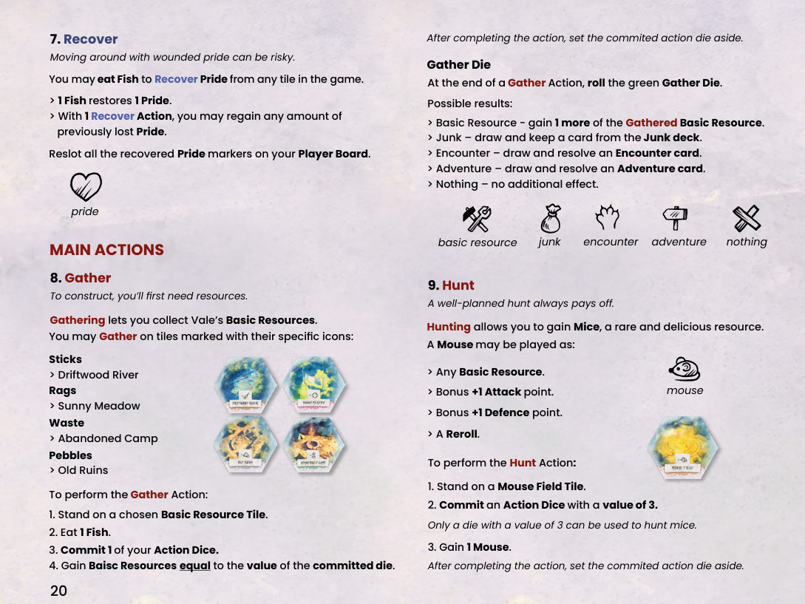
19建造
建筑提供威望和额外效果。
要建造一座建筑，你必须手中有对应的建筑牌。花费卡牌左侧所示的资源，并吃掉 1 条鱼。
建造完成后，把建筑牌放在玩家面板旁边，构成你的 后院，然后结算卡牌效果：
- 获得卡牌右侧所示的威望。
- 按卡牌上的图标移动心情标记。
- 每座建筑都附赠一次性奖励。拿走相应的指示物、杂物牌或获得 1 点成长。
- 部分建筑允许你花 1 条鱼雇 1 名雇工，由锤子图标标示。
一座建筑只能雇佣 1 名雇工，但可以拥有任意数量的升级。
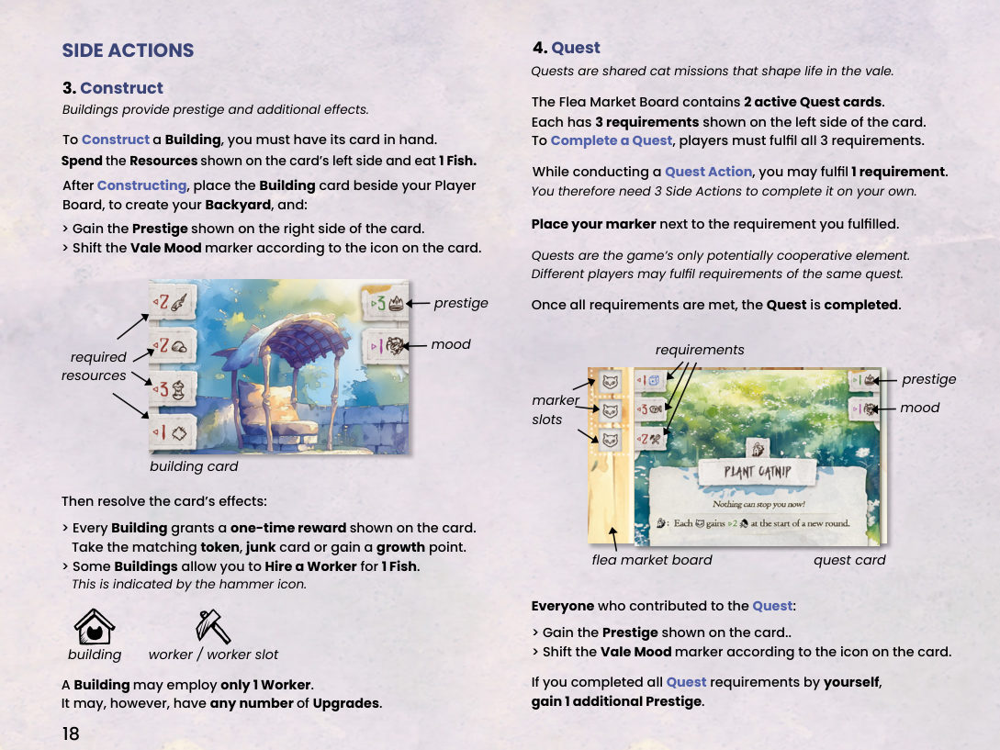
20任务
任务是影响谷地生活的共享猫活动。跳蚤市场板上始终有 2 张激活的任务牌。不同的玩家可以共同完成同一任务的不同要求。
每张任务牌左侧有 3 项要求。要完成任务，必须由玩家满足全部 3 项要求。每次执行任务行动，可以满足 1 项要求。因此独自完成任务需要 3 次附带行动。
当所有要求都满足后，任务完成。在你满足的那项要求旁放上你的标记。
完成任务后
- 在主图板的谷地生活区翻开对应（同名）的板块，并结算其效果。
- 所有参与该任务的玩家：
- 获得卡牌上所示的威望。
- 按卡牌上的图标移动心情标记。
- 若你独自满足该任务的所有要求，额外获得 1 点威望。
- 部分任务需要做出选择。如果你满足了最后一项要求，选择权归你。
完成任务后，弃掉该任务牌并从任务牌库中抽 1 张新牌放到跳蚤市场板上。效果立即生效，影响所有玩家直至游戏结束。
21标记领地
猫通过留下尿味来标记自己的领地。
你可以标记除了后院和山以外的任意地块。标记 1 块地块算作 1 次附带行动。
标记地块的方法：
- 移动到你想标记的地块上。
- 把你 1 颗行动骰的值减 1。如果该骰的值已经是 1，则视为已消耗。
- 把你的标记放在你猫所在的地块上。
若该地块上已有其他玩家的标记，则将其替换为你的标记。一块地块上同时只能存在 1 个标记。在每个季节结束的领地阶段，每 3 块已标记地块获得 1 点威望。
22捕鱼
捕鱼可以获得鱼——谷地的主要货币。
你可以在标有鱼图标的地块上捕鱼。
鱼可以：
- 在交易时花掉。
- 吃掉以执行某些行动。
- 吃掉以获得额外移动力。
聪明的猫总会确保自己的鱼仓永不枯竭。
执行捕鱼行动的方法：
- 站在选定的渔场地块上。
- 投入 1 颗行动骰。
- 获得等于所投入骰值两倍的鱼。
执行完行动后，把投入的行动骰放到一旁。
示例 2：投入的骰值为 1，获得 2 条鱼。
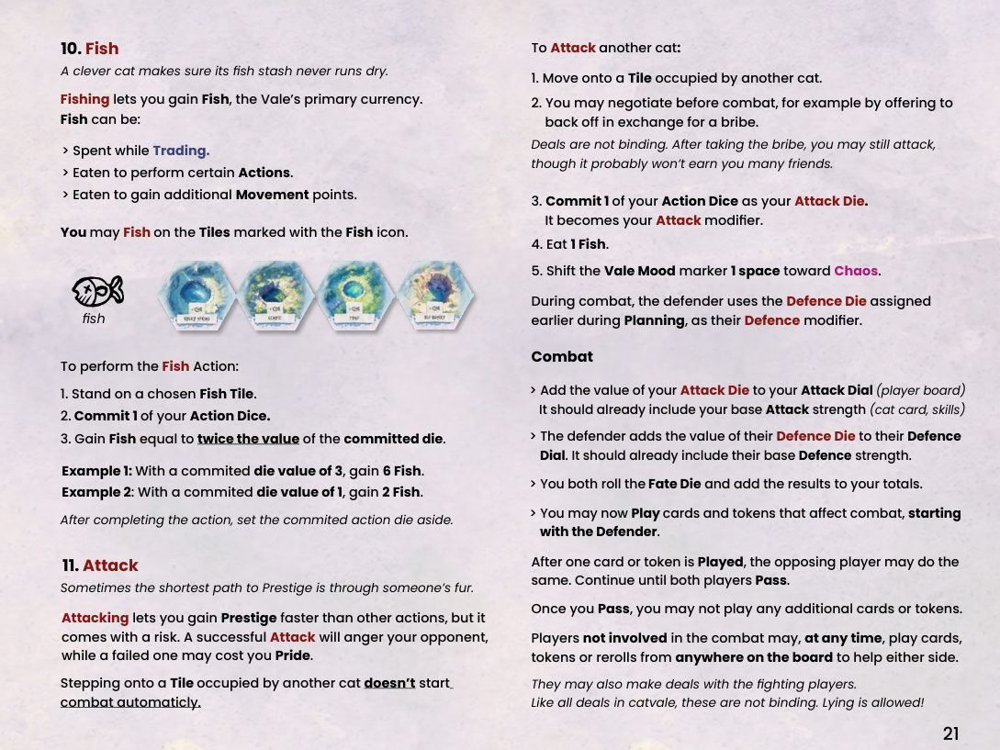
23攻击
攻击让你比其他行动更快地获得威望，但也伴随着风险。成功的攻击会激怒对手，失败则可能损失傲气。
有时通往威望最短的路，就踩在别人的皮毛上。
仅是踏入其他猫占据的地块，并不会自动开始战斗。
攻击其他猫的方法：
- 踏入其他猫占据的地块。
- 战斗前你可以谈判，例如以贿赂换取退让。协议不具约束力——撒谎是被允许的！
- 投入 1 颗行动骰作为你的攻击骰。它成为你的攻击修正。
- 吃掉 1 条鱼。
- 把心情标记向混乱方向移动 1 格。
战斗流程
- 把你的攻击骰值加到面板的攻击刻度上。该刻度已经包含你的基础攻击力（来自猫咪卡和技能）。
- 双方各投 1 颗命运骰，把结果加到各自的总值上。
- 防御者把防御骰值加到防御刻度上。该刻度已经包含基础防御力。
- 从防御者开始，你们可以依次打出影响战斗的卡牌和指示物。打出一张牌或一个指示物后，对手可以打出他的。重复此过程直到双方都选择过牌。一旦过牌，你不能再打出任何额外的卡牌或指示物。
战斗中，防御者使用计划阶段已选定的防御骰作为防御修正。
未参与战斗的玩家可以随时从任意位置打出卡牌、指示物或重投，以支援任一方，也可以与正在战斗的玩家达成交易。
结算战斗
比较双方最终的攻、防总值。胜者投黄色奖励骰。
- 若攻击更高，攻击方获胜。
- 威望 — 获得 1 点威望。
- 成长 — 获得并消耗 1 点成长点。
- 卡牌 — 从战败猫手中偷 1 张牌。若对手手中无牌则无法偷取。
- 获得 1 枚重投指示物。
- 若防御更高，防御方获胜。平局时防御方获胜。
- 若防御方获胜或平局，由防御方投奖励骰。
- 你可以消耗 1 枚重投指示物来重投胜利骰。
失败者的傲气按双方总值之差减少。平局差值为 0，因此不损失傲气。
战斗示例
- 蓝猫攻击绿猫。
- 基础：攻击方攻击 3，防御方防御 2。攻击方打出 +1 攻击指示物，防御方用 1 只老鼠当作 +1 防御。
- 骰子投入：攻击方行动骰 3，防御方防御骰 3。
- 命运：攻击方投 1，防御方投 2。第三位玩家为攻击方花费 1 枚重投（重投为 3）。
- 攻击方最终：3 + 1（指示物）+ 3（命运）+ 3（行动）= 10。防御方最终：2 + 1（老鼠）+ 2（命运）+ 3（防御）= 8。
- 攻击方以 3 点之差获胜。防御方失去 3 点傲气并陷入羞辱。攻击方投奖励骰。
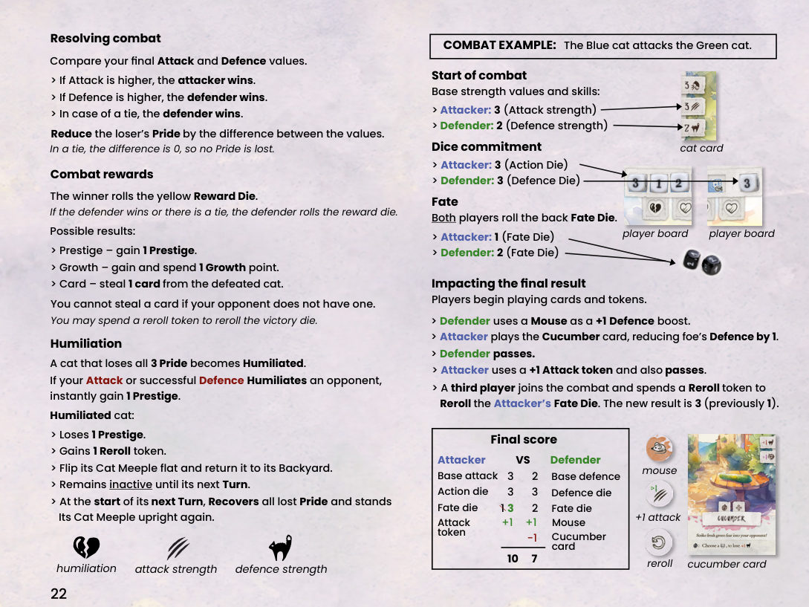
24决斗（竞技场扩展）
竞技场允许你与由游戏控制的对手机智对战。
参与决斗的方法：
- 站在竞技场地块上。
- 投入 1 颗行动骰。根据抽到的对手，它可能成为你的攻击修正或被无效果地消耗掉。
- 吃掉 1 条鱼。
- 从竞技场牌库中抽 1 张对手卡并大声朗读。
对手类型
竞技场有 3 类对手：侵略型、谨慎型、非常规型。
决斗未必以战斗收场。对手可能攻击你，或者你攻击对手——遵循对手卡上的说明。
若你受到攻击，你投入的行动骰会被无效果地消耗掉，改用计划阶段选定的防御骰。若你主动攻击，你投入的行动骰成为你的攻击修正。
决斗结算
- 根据对手情况，把攻击或防御修正的值加到面板对应的刻度上。该刻度已包含基础攻击或防御力（来自猫咪卡和技能）。
- 双方各投命运骰并把结果加到各自的总值上。由你左手边的玩家为对手投骰。
- 查看对手卡上标注的对手强度。
- 打出卡牌和指示物以改变结果。其他玩家可以支援任一方。
- 数值更高者获胜。平局时防御方获胜。
按攻击行动的方式结算决斗。
决斗结束后
无论胜负，你可以把自己的标记在竞技场轨道上向右移动 1 格。若该格有奖励，立即获得。失败者可能陷入羞辱并失去傲气。赢得决斗后不需要投奖励骰。
玩家在竞技场轨道上独立获得奖励，互不影响。
赢得决斗
- 若你获胜：从对手卡所示的奖励中选 1 项，然后把对手卡放到竞技场牌库底部。
- 若你羞辱了对手：获得 1 点威望，把对手卡作为战利品放进你的后院。
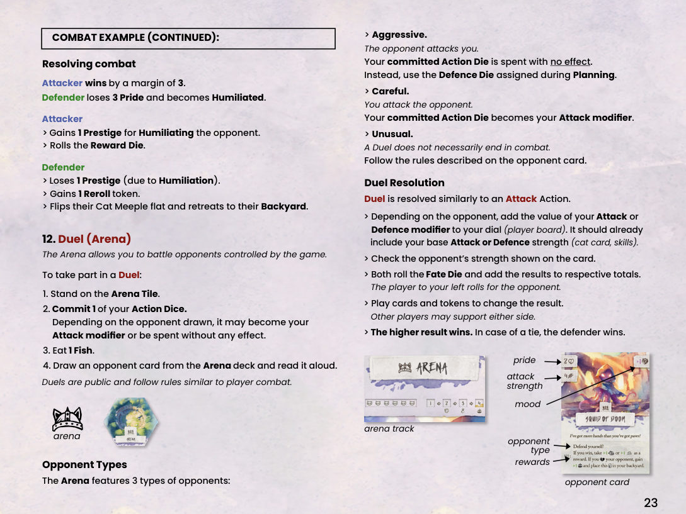
25挖掘（猫砂盆秘密扩展）
猫可以花上数小时在沙堆里挖掘寻找宝藏。即使在收成之后，砂坑里也总有惊喜。
挖掘推进你在猫砂盆秘密轨道上的位置，并为收成阶段做准备——奖励最勤勉的挖掘者。
本行动只能在夏季第 1 轮结束之前使用。
执行挖掘行动的方法：
- 站在大砂坑地块上。
- 投入 1 颗或多颗行动骰。
- 吃掉 3 条鱼。
- 在收成轨道上把标记向前移动，移动格数等于所投入行动骰的值之和。
收成
夏季第 1 轮结束时进行收成。查看你在轨道上的位置：
- 每位至少执行过 1 次挖掘的玩家从收成袋中抽取指示物。
- 抽取的指示物数量取决于轨道位置。
- 轨道上每经过 1 个指示物图标，收成阶段抽取的指示物数量 +1。
若多名玩家的标记并列在同一格（先到者优先），按"先到先得"处理。
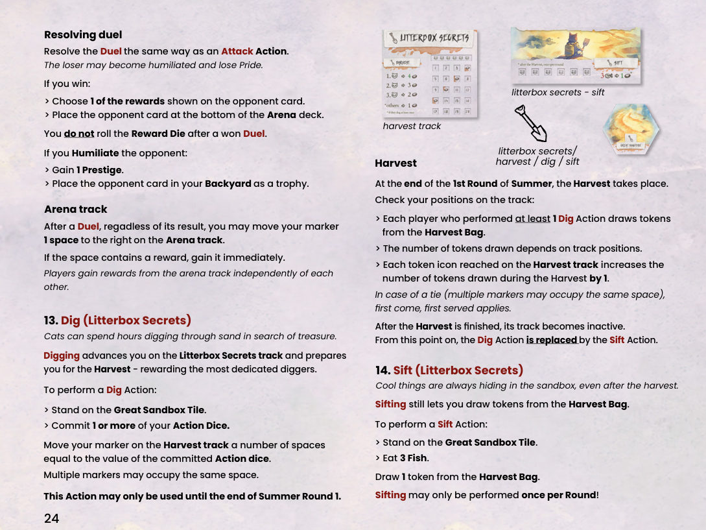
26筛沙（猫砂盆秘密扩展）
筛沙仍能让你从收成袋里抽指示物。
每轮只能执行 1 次筛沙！
执行筛沙行动的方法：
- 站在大砂坑地块上。
- 从收成袋里抽 1 枚指示物。
多个标记可以同时停留在同一格。
27采集
采集让你获得谷地的基础资源。要建造，首先得有资源。
你可以在标有对应资源图标的地块上采集：
- 木棍 — 浮木河
- 破布 — 阳光草甸
- 废料 — 废弃营地
- 石子 — 古老废墟
执行采集行动的方法：
- 站在选定的资源地块上。
- 吃掉 1 条鱼。
- 投入 1 颗行动骰。
- 获得等于所投入骰值的基础资源。
采集骰
采集行动结束时，投绿色采集骰。可能的结果：
- 基础资源 — 再获得 1 个刚采集的基础资源。
- 杂物 — 从杂物牌库中抽 1 张牌留下。
- 遭遇 — 抽 1 张遭遇牌并结算。
- 冒险 — 抽 1 张冒险牌并结算。
- 无 — 没有额外效果。
28狩猎
狩猎让你获得老鼠——谷地中稀有又美味的资源。精心筹划的狩猎总会有所回报。
1 只老鼠可以当作：
- 任意一种基础资源。
- +1 攻击点加成。
- +1 防御点加成。
- 1 次重投。
执行狩猎行动的方法：
- 站在鼠田地块上。
- 投入 1 颗值为 3 的行动骰。（只有值为 3 的骰子可以用于狩猎。）
- 获得 1 只老鼠。
执行完行动后，把投入的行动骰放到一旁。
29谷地心情
心情代表着谷地中和谐与混乱之间的平衡。你的行动会影响这种平衡。和平与善意偏向和谐，而冲突与混乱则偏向混乱。
大多数卡牌在右上角或其效果区域标有心情图标。打出或结算后，按指示移动心情标记。
发起攻击总会把心情标记向混乱方向移动 1 格。
在每个季节开始时，于成长阶段查看心情标记的位置并结算其效果。
接下来，把心情标记重置回中央的起始位置。
详见 成长阶段 一节中关于心情对成长影响的更多说明。
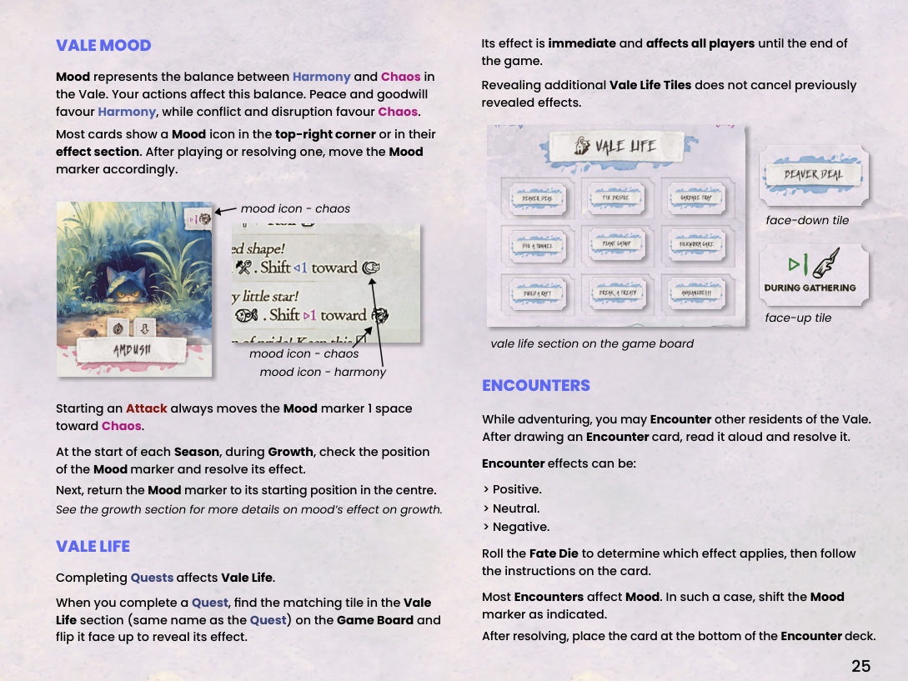
30谷地生活
完成任务会影响谷地生活。
完成任务后，在游戏图板的 谷地生活 区找到同名板块并翻至正面，展示其效果。效果立即生效，并影响所有玩家直至游戏结束。
31遭遇
冒险途中，你可能会遭遇谷地的其他居民。抽到遭遇牌后，大声朗读并结算。
遭遇效果分为：
- 正面
- 中性
- 负面
投命运骰决定适用哪种效果，然后按卡牌说明执行。
大多数遭遇会影响心情。此时按指示移动心情标记。结算后，把卡牌放到遭遇牌库底部。
遭遇战斗
遭遇可能引发战斗。若你被攻击，按正常战斗结算，你作为防御方。战胜的奖励见卡牌说明。赢得遭遇后不需要投奖励骰。
32重投
部分卡牌允许重投。除非另有说明，按以下规则执行。
游戏开始时，每位玩家获得 1 枚重投指示物。1 只老鼠也可以当作重投使用。
使用重投
消耗 1 枚重投指示物、1 只老鼠或对应卡牌，可以重投游戏中的任意骰子，包括你自己的、其他玩家的、竞技场和遭遇中的对手骰。即使在他人战斗中也可以重投。
重投指示物使用后弃掉。
限制
已投入的行动骰不能重投。一旦投入，行动骰视为已消耗，值不可改变。
适用于：
- 行动骰（尚未投入的）
- 防御骰（即使已投入！）
- 命运骰
- 奖励骰
- 采集骰
获取额外重投的方式：
- 抽到冒险牌
- 在跳蚤市场购买
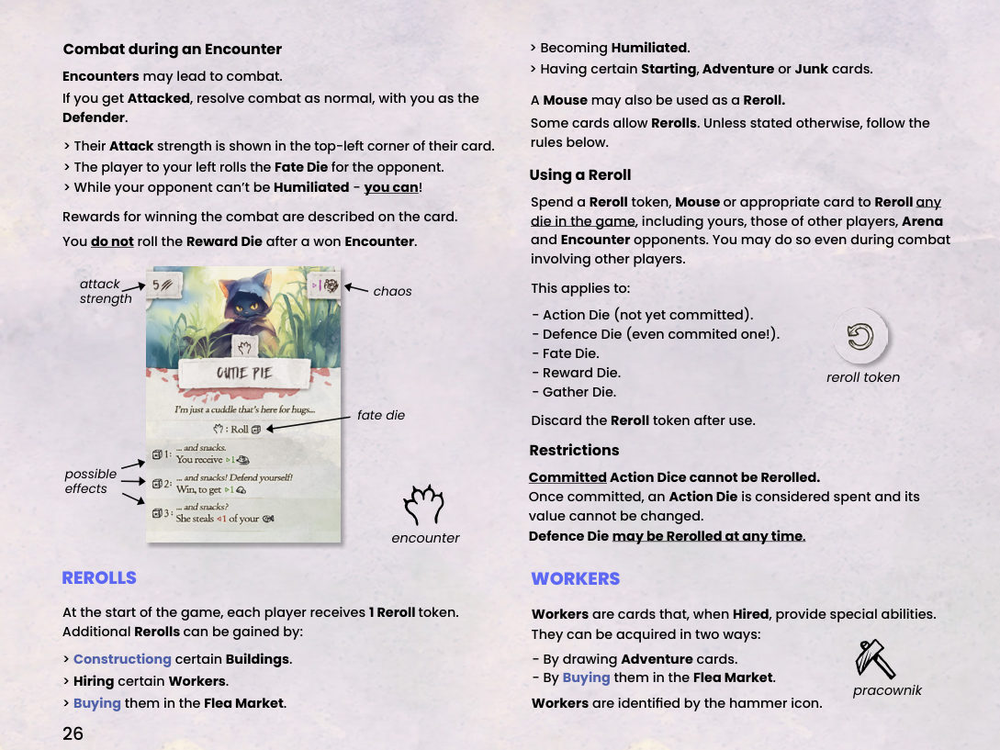
33雇工
雇工是被雇佣后提供特殊能力的卡牌，由锤子图标标识。
可以通过两种方式获得：
- 建造特定的建筑
- 雇佣特定的雇工
雇佣雇工的方法：
- 手中有该雇工的卡牌。
- 拥有一座带锤子图标的建筑。
- 支付 1 条鱼。
雇佣完成后
- 把雇工卡放在选中的建筑旁边。
- 获得 1 点威望。
- 按雇工卡上的图标调整心情。
- 雇佣后可以立即开始使用雇工的能力。
- 使用能力后，把卡牌旋转 90° 标记为已使用。
限制
- 每座建筑只能雇佣 1 名雇工。
- 只要你还有空置的建筑，就可以拥有任意数量的雇工。
- 起始牌库中的建筑不能雇佣雇工。
- 你可以用新雇工替换已雇佣的雇工。弃掉旧雇工卡，按正常流程雇佣新雇工。替换时不获得威望。
获取额外重投的方式：
- 陷入羞辱状态。
- 持有特定的起始、冒险或杂物牌。
- 在跳蚤市场购买。
34跳蚤市场
跳蚤市场板展示了游戏中的交易选项。交易可以从地图上的任意位置进行。
卡牌排成 4 列，每列价格不同。游戏中，你可以站在跳蚤市场、黑市或港湾上从两个牌库中买牌，并对所选交易获得折扣。
两个跳蚤市场牌库（建筑与奇珍）的牌都放在第 1 列，可以盲买。
购买卡牌
- 第 2 列的牌：5 条鱼。
- 第 3 列的牌：4 条鱼。
- 第 4 列的牌：3 条鱼。
- 其余列包含所有玩家可见的明牌。
- 盲买面朝下的牌：花 3 条鱼从第 1 列任一跳蚤市场牌库中盲买 1 张面朝下的牌。
站在跳蚤市场地块上可使用跳蚤市场折扣（-1 条鱼）。站在港湾地块上可使用港湾折扣（-2 条鱼）。站在黑市地块上可使用黑市折扣（-2 条鱼）。
购买卡牌后，在你的回合结束时：
- 把卡牌向右滑动一列。
- 弃掉第 4 列的牌。
- 用对应牌库的牌补满空位。
刷新跳蚤市场
整理阶段期间：
- 剩余卡牌向右滑动一列。
- 用对应牌库的牌补满。
购买成长点
购买后立即使用，推进你在成长树上的位置。
购买强化指示物
你可以购买：
- 重投指示物
- 攻击与防御指示物
购买后，从供应中抽一枚指示物，不让其他玩家看到。把它面朝下放在你的面板上，使用时才翻开。
购买行动骰
你可以从跳蚤市场板上购买额外的行动骰。每轮最多只能购买 1 颗行动骰。购买的骰子功能与普通行动骰相同，购买后放在面板上的对应槽位。
价格依骰值而定：
- 值为 1 的行动骰：3 条鱼
- 值为 2 的行动骰：4 条鱼
- 值为 3 的行动骰：6 条鱼
通用交易
跳蚤市场板上的通用交易选项：
- 购买基础资源：花 3 条鱼获得 1 个自选基础资源。
- 交换基础资源：用 2 个其他基础资源换 1 个自选基础资源。
- 出售卡牌：每张牌卖 2 条鱼。1 次交易行动可以卖任意张牌。
野心牌不能出售。出售卡牌和交换基础资源时不享受折扣。
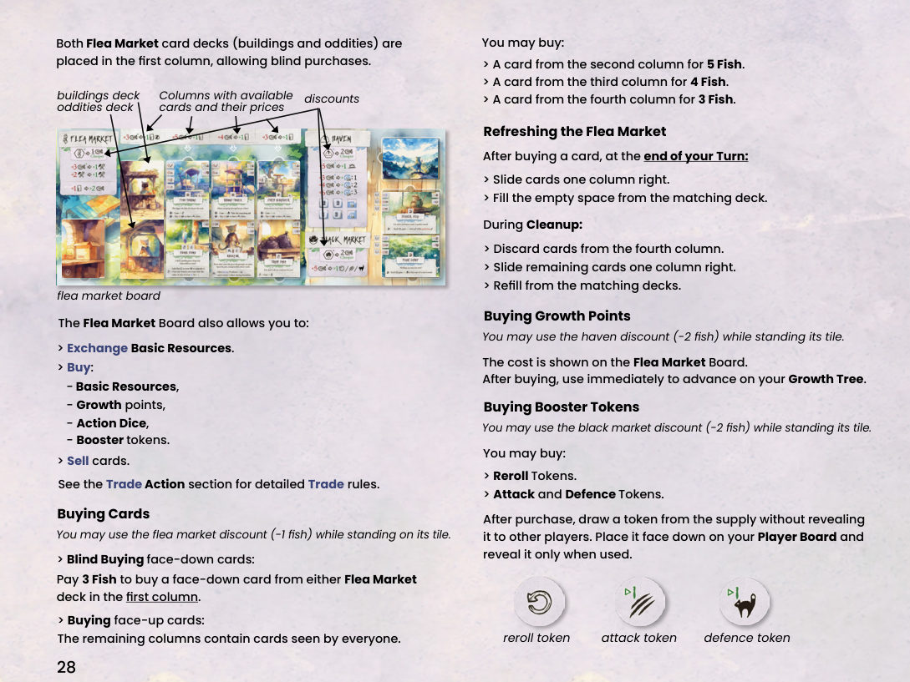
35野心
野心是可选的——你不必完成它们。
游戏开始时你有 1 张野心牌。野心牌不能交易、出售或偷取。只有部分卡牌效果允许你查看其他玩家的野心。
追踪野心进度
如果某张野心需要追踪完成的动作数，你可以心算，或用你自己的指示物标记进度（例如放在卡牌背面）。
完成野心
- 立即向所有玩家宣布。
- 获得奖励：1 点威望和 1 点成长。
- 把野心牌作为战利品放进你的后院。
野心完成后不会补发新牌。
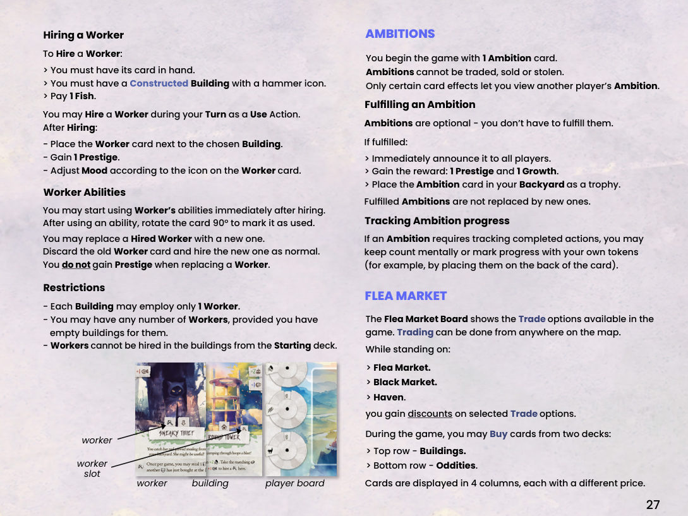
36终局与胜负
如何获得威望
你可以通过以下 12 种方式获得威望：
- 建造建筑。
- 完成任务。
- 实现野心。
- 羞辱其他玩家。
- 在竞技场决斗中羞辱对手。
- 走完竞技场轨道。
- 标记地块。
- 在成长树上达到特定里程碑。
- 雇佣雇工。
- 在与玩家战斗中获胜后投出奖励骰。
- 抽到授予威望的卡牌。
- 在收成或筛沙中抽到威望指示物。
威望也会被扣减：
- 永久：在战斗、竞技场或遭遇中被羞辱；失去雇工且没有替换为新雇工。
- 暂时：其他玩家用"猫尿"卡喷你的建筑；其他玩家在你的后院建造负面建筑；你失去授予临时威望的卡牌。
终局
终局在以下条件触发时开始：
- 任意玩家达到 20 点威望，或
- 秋季的最后一轮开始。
游戏继续进行直到当前轮结束，给其他玩家追赶或反超的机会。
超过 20 的威望依然计分。如果你超过 20 点威望，把标记放到威望轨道的起点，从 21 开始继续计数。
获胜
威望最高的玩家获胜。
平局
按以下顺序打破平局：
- 后院威望最高的猫获胜：将平局玩家后院中所有卡牌的威望值相加。战利品和野心牌也算在内。
- 若仍平局，鱼最多的猫获胜。
取消终局
若你在触发终局后威望跌回 20 以下，且没有其他玩家达到 20 点威望，则终局取消，游戏按正常流程继续。
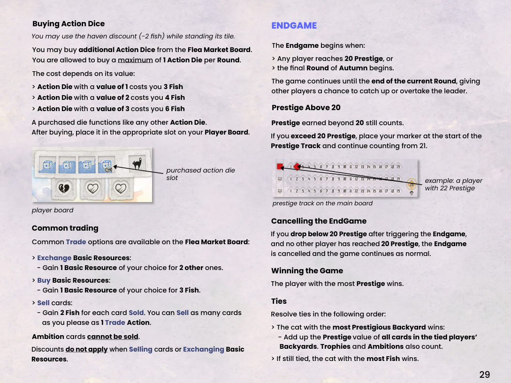
37组件详解
卡牌
游戏包含多个牌库：
- 猫咪牌库 — 你扮演的角色牌。
- 起始牌库 — 游戏开始时获得的卡牌。
- 冒险牌库 — 冒险阶段抽取的卡牌。
- 遭遇牌库 — 含有可遇见的随机猫咪卡牌。
- 任务牌库 — 待完成的任务卡牌。
- 野心牌库 — 待实现的野心。
- 跳蚤市场牌库 — 可购买的卡牌：
- 建筑牌库 — 建筑卡牌。
- 奇珍牌库 — 雇工、杂物、资源出售和建筑升级。
- 杂物牌库 — 可获取或购买的卡牌。
- 竞技场牌库 — 在竞技场决斗的对手。
卡牌结构
每张牌包含以下信息（区域与原版一致）：
- 牌库类型 — 左上角图标。
- 公开性 — 卡牌是大声朗读还是保密。
- 名称
- 风味文本
- 卡牌激活 — 何时可以打出（立即 / 你的回合中 / 任意时刻）。
- 需求 / 费用 — 左侧：打出所需的基础资源或鱼。无图标表示无费用。
- 效果 — 底部区域。部分卡牌有多种效果，部分需要命运骰决定结算哪个效果。
- 奖励 — 右侧：威望、攻击或防御加成，通常带心情效果。
- 雇工槽 — 锤子图标 — 部分卡牌（杂物、雇工、起始和冒险）带有特殊激活图标。
- 心情 — 右上角图标，用于移动心情标记。
同样的奖励信息也可能出现在卡牌效果中。
猫咪（玩家）卡
每位玩家拥有一张猫咪卡，代表其操控的猫。猫咪卡只在颜色、插画、起始基础资源和特定的采集加成（特殊能力）上有差异。
卡牌分两面 — 年幼的猫与年长的猫 — 分别显示移动力、基础攻击力、基础防御力和猫的等级。
奇珍卡（示例）
奇珍牌库包含但不限于：
- 杂物盒 — 购买后立即弃掉，从杂物牌库抽 1 张牌，不要展示给任何人。
- 出售 — 购买出售卡后，立即用它换取所列的基础资源。
骰子
游戏包含 4 种骰子，用于不同的场景：
- 行动骰（值 1–3）— 用于执行行动和决定防御修正。
- 采集骰（K12）— 仅在采集行动后投掷，触发额外效果。
- 命运骰（值 1–3）— 用于战斗及决定随机卡牌效果。
- 奖励骰（K12）— 在战胜另一玩家后投出。授予威望、成长点或战败猫的战利品。
地块与指示物
游戏图板由六边形地块组成。它们允许在行走时执行不同活动或影响移动。
普通地块：山、青山、火焰、熔岩、冻湖、渔场地块、基础资源地块、跳蚤市场 / 黑市 / 港湾、鼠田、竞技场、大砂坑、传送门、后院、森林、危险沼泽。
普通指示物：老鼠指示物（面值为 1，可当作任意基础资源、重投或 +1 攻击/防御），鱼指示物（面值 1 和 3，用作货币，在交易和某些行动中消耗，或吃掉以获得额外移动），基础资源指示物（面值 1 和 3，用于建造）。
特殊地块：
- 山 — 无法跨越。完成"挖掘隧道"任务后可被替换 — 替换后可跨越。
- 火焰 — 放在任意地块上（后院除外）。该地块在本季节结束前变为无效。
- 熔岩 — 放在与山相邻的地块上（后院除外）。该地块永久毁坏。离开时失去 1 点移动力。
- 渔场地块 — 可在此捕鱼。
- 基础资源地块 — 可在此采集。
- 港湾 / 黑市 / 跳蚤市场 — 在此获得交易折扣。
- 鼠田 — 可在此狩猎。
- 竞技场 — 可在此决斗。
- 大砂坑 — 可在此挖掘或筛沙。
- 传送门 — 可在传送门之间传送。传送不消耗移动力。
- 后院 — 你的地盘。除非有卡牌效果允许，否则不会被攻击。混乱世界变体下，游戏从这里开始。
- 森林 — 无效果，除非你在冒险变体下使用了森林指示物。
- 危险沼泽 — 进入时失去 1 点傲气。
森林指示物（冒险变体）
翻开时，指示物分为：正面、负面或未知。效果见任务卡和地块上的说明。
强化指示物
杂物、成长、重投、+2 移动、+1 攻击或防御加成。
特殊指示物
- 隧道 — 抽到秘密隧道卡后，把此指示物放在两块选定的地块上。它们形成一条所有玩家都能使用的通道。其作用类似传送门，但仅在所选两块地块之间有效。
- 桥 — 完成任务"修桥"后，把此指示物放在两块选定的地块上。它们形成一条所有玩家都能使用的通道。其作用类似传送门，但仅在所选两块地块之间有效。
- 捕猫 — 抽到捕猫卡后，把此指示物放在所选玩家的米宝下方。
- 猫仙子 — 抽到猫仙子卡后，把此指示物放在所选的基础资源地块上。
- 蝴蝶结 — 抽到猫展蝴蝶结卡后，把此指示物放在所选玩家的米宝下方。
- 移动指示物 — 用来获得额外移动力。
- 攻击指示物 — 为自己或其他玩家提供 +1 攻击加成。
- 防御指示物 — 为自己或其他玩家提供 +1 防御加成。
技能（成长树）
随着你在成长树上的推进，可以解锁提供永久加成和一次性奖励的技能：
- 利爪 — 被动技能。永久获得 +1 攻击加成。
- 好奇的鼻子、装甲皮毛、迅捷之爪、胡须声纳、鹰眼 — 采集 / 防御加成。
- 河狸交易、蚕茧关怀、修桥、垃圾陷阱、建造木筏、挖掘隧道、雪崩!!!、种植猫薄荷、撕毁条约 — 翻开对应谷地生活板块的任务。
每项被动技能只能解锁一次。一次性奖励可以领取两次（每个标记一次），长大除外。
长大
当标记到达"长大"槽位时，把猫咪卡翻到年长面。从此时起使用升级版。把你的小猫咪米宝换成大猫咪米宝。
收成指示物
在收成阶段或筛沙行动中抽取指示物。可能包括：
- 基础资源。面值 1、2 和 3。
- 威望。
- 老鼠。
- 强化指示物：杂物、成长、重投、+2 移动、+1 攻击或防御加成。
所有收成指示物背面相同，因此你可以保密或虚张声势。
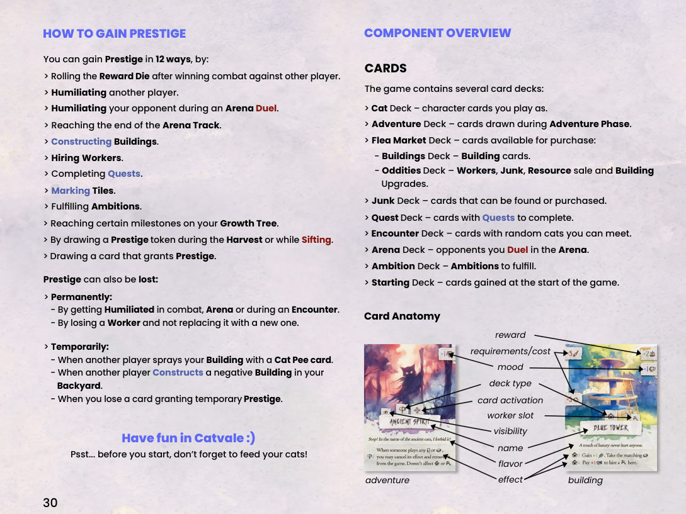
制作名单
游戏设计：Łukasz Berdowski
插画：Natalia Albecka-Eikmann
美术与叙事：Łukasz Berdowski
编辑与校对：Anna Żbikowska
画师：Izabela Berdowska 与 Kwadart 画廊学员
出版方：FUDICE.COM / CATVALEGAME.COM
谨以此作纪念 Furia——她的顽皮灵魂启发了整个 Catvale 世界。
Catvale 玩得开心 :)